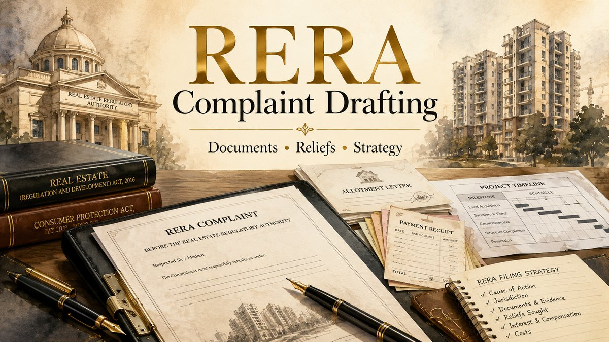

Last updated: July 2026.

A RERA complaint should not be a loose collection of allegations and documents. It should identify the project, promoter, unit, contractual timeline, payments, breach, present project status and exact relief sought. Every material statement should connect to a date, document or identifiable project record.
What should be checked before drafting a RERA complaint?
Before drafting begins, confirm the identity of the promoter, the registered name and number of the project, the project location, the unit or plot details, the agreement date, the promised possession date and the present status of construction or handover. The complaint should also identify whether any earlier notice, consumer case, civil proceeding, arbitration step, settlement or prior RERA complaint exists.
Section 31 of the Real Estate (Regulation and Development) Act, 2016 permits an aggrieved person to file a complaint with the Real Estate Regulatory Authority or the adjudicating officer for a violation of the Act, rules or regulations. The applicable form, fee, online portal and routing procedure must still be checked under the rules and current system of the State or Union Territory where the project is situated.
The relief should be selected before the narrative is finalised. A complaint seeking possession with delay interest is not drafted in the same way as a complaint seeking refund, compensation, completion of amenities, execution of conveyance or correction of an unlawful demand.
Documents required before drafting the complaint
The first working file should be organised into logical document groups rather than one unstructured PDF. Commonly relevant records include:
- Booking application, application form and booking receipt.
- Allotment letter and complete agreement for sale or builder-buyer agreement.
- Payment plan, demand letters, receipts, bank statements and loan-disbursement records.
- Project registration details, declared completion date and public project information available on the relevant RERA portal.
- Brochure, advertisement, layout, sanctioned-plan representation or amenity promise relied upon by the allottee.
- Emails, letters, notices, WhatsApp communications and recorded possession or refund assurances.
- Construction updates, photographs, site-visit records, occupancy or completion information and possession-offer documents.
- Cancellation, refund, alternate-unit, settlement or restructuring communications.
- Earlier complaints, orders, legal notices or proceedings concerning the same unit or cause of action.
Payment figures must be reconciled. The complaint should clearly state the total sale consideration, amount paid, amount demanded, disputed charges, outstanding amount if any and the source document for every material figure.
How to prepare the chronology of facts
A useful chronology normally begins with the booking and ends with the latest event giving rise to the complaint. Each paragraph should cover one material event and, wherever possible, identify the corresponding annexure.
The chronology may include the booking date, allotment date, agreement execution, payments, promised possession date, grace period, revised assurances, construction updates, default notices, site visits, possession offer, cancellation request, refund demand and the promoter's latest response.
Separate contractual dates from later informal assurances. An email stating that possession is expected shortly may not amend the agreement in the same manner as a formally accepted supplementary document. The complaint should accurately describe the legal and evidentiary status of each communication.
How to structure legal grounds against the promoter
The legal grounds should arise from the pleaded facts rather than appearing as a generic list of statutory provisions. Depending on the dispute, the complaint may require examination of the promoter's duties and disclosures under Section 11, loss caused by an incorrect advertisement or prospectus under Section 12, advance taken without the prescribed agreement under Section 13, deviation from sanctioned plans or specifications under Section 14, delay or failure covered by Section 18, and the allottee's statutory rights under Section 19.
Every ground should answer three questions: what obligation applied, what the promoter did or failed to do, and which document proves the alleged violation. A ground alleging delayed possession should identify the contractual possession date, permissible grace period, project status and period of delay. A ground relating to payment demand should identify the agreement clause, demand date, amount and reason the charge is disputed.
Do not reproduce large portions of the Act without connecting them to the project record. A shorter, fact-specific ground is ordinarily more useful than a long statutory extract that does not identify the actual breach.
Choosing the correct relief: possession, refund, interest or compensation
If the allottee still wants the unit, the complaint may focus on completion or possession, a clear handover timeline, statutory interest for the period of delay and compliance with remaining project obligations. The record should show that the allottee remained ready to perform applicable payment and documentation obligations.
If the allottee intends to withdraw, the complaint may require a refund-oriented case under Section 18, supported by a complete payment calculation, date-wise proof of amounts paid, the contractual possession position and the present project status. The complaint should not leave it unclear whether the allottee seeks possession and refund simultaneously as final alternative outcomes without explaining the legal basis.
Compensation requires separate attention. Sections 71 and 72 govern adjudication of compensation under specified provisions and the factors to be considered. State portals may separately identify complaints before the Authority and applications or complaints for compensation before the adjudicating officer. The current State rules, portal workflow and prescribed form should therefore be checked before filing.
Other fact-specific relief may concern execution of conveyance, delivery of documents, correction of demand, completion of promised amenities, disclosure of project information or compliance with an existing order. Each prayer should be capable of being understood and implemented without reconstructing the entire complaint.
How to draft the prayer clause
The prayer clause should convert the grievance into precise relief. Avoid vague requests such as asking the Authority to take appropriate action without specifying the primary outcome sought.
A properly structured prayer may identify the unit, amount, period and event relevant to each relief. Where interest or refund is claimed, attach a separate calculation sheet showing the principal amount, payment dates, proposed calculation basis and cut-off date. Where possession is sought, identify the requested handover direction, completion documents, conveyance requirements and delay-interest period.
Costs, interim directions and alternative relief should be pleaded only where factually and procedurally justified. The prayer should remain consistent with the main factual case and the forum selected.
Preparing annexures and the complaint paper book
Create an annexure index before uploading or compiling the complaint. A practical working sequence may begin with identity and authority documents, followed by booking and allotment papers, the agreement, payment record, project details, correspondence, notices, construction or possession evidence, prior proceedings and the relief calculation.
Each annexure should be readable, complete and referred to in the relevant paragraph. Avoid attaching only selected pages of an agreement when the omitted clauses may concern possession, payment, termination, force majeure, dispute resolution or notices.
Long email chains and message exports should be arranged chronologically. Screenshots should preserve the sender, recipient and date wherever possible. Duplicate and irrelevant documents should be removed so that the core record remains identifiable.
Common mistakes in RERA complaint drafting
- Using the wrong promoter name or failing to identify the registered project and phase.
- Not distinguishing the booking date, agreement date and promised possession date.
- Claiming refund, possession, interest and compensation without a coherent relief structure.
- Failing to reconcile the amount paid with receipts, bank statements and the promoter's ledger.
- Making allegations about construction or approvals without supporting project records.
- Not disclosing prior proceedings, settlement discussions or an earlier complaint.
- Uploading incomplete agreements, blurred scans or unindexed documents.
- Copying generic legal grounds without linking them to facts and annexures.
- Ignoring the applicable State form, fee, portal fields or compensation route.
- Assuming that limitation, maintainability or jurisdiction cannot arise merely because the dispute concerns RERA.
Practical complaint drafting checklist
- Confirm project location, registration number, phase and promoter identity.
- Identify the unit, consideration, payments and outstanding amount.
- Mark the contractual possession date and every later timeline communication.
- Prepare a one-page chronology before drafting the detailed facts.
- Select the primary relief and identify any properly framed alternative relief.
- Match every legal ground with the supporting fact and annexure.
- Prepare separate payment, delay and interest calculations where relevant.
- Review the current State RERA rules, portal, user manual, filing fee and document limits.
- Check prior proceedings and ensure there is no unexplained inconsistency in the pleadings.
- Review the final complaint for names, dates, amounts, links, annexure references and prayer language.
Related RERA guides and service pages
References / Sources
- Real Estate (Regulation and Development) Act, 2016 — official PDF hosted by RERA Bihar.
- Real Estate Regulatory Authority, Bihar — official portal, complaint filing, rules and user manual.
- Uttar Pradesh Real Estate Regulatory Authority — official complaint and compensation-filing portal.
- Sections 11 to 19, 31, 71 and 72 of the Real Estate (Regulation and Development) Act, 2016 may be relevant depending on the violation and relief claimed.
- The applicable State or Union Territory rules, regulations, prescribed form, fee and current electronic-filing instructions must be verified before filing.
Prepare the agreement, payment ledger, project details, possession timeline, correspondence, prior proceedings and proposed relief before sending a structured enquiry. Avoid sending confidential documents until consultation or engagement is confirmed.
Start Case Enquiry